正文: 妈呀，发现被大神赞了好开心～～哈哈哈哈哈哈
强答一个！
碰到爆照的就忍不住要来硬答
反正我是小透明你们看不见我～看不见看不见
以下回答可能会暴露职业…so，不管啦，老子开心最重要
笑的话一定要发自内心的笑，这样笑意才会从嘴角传到眼睛
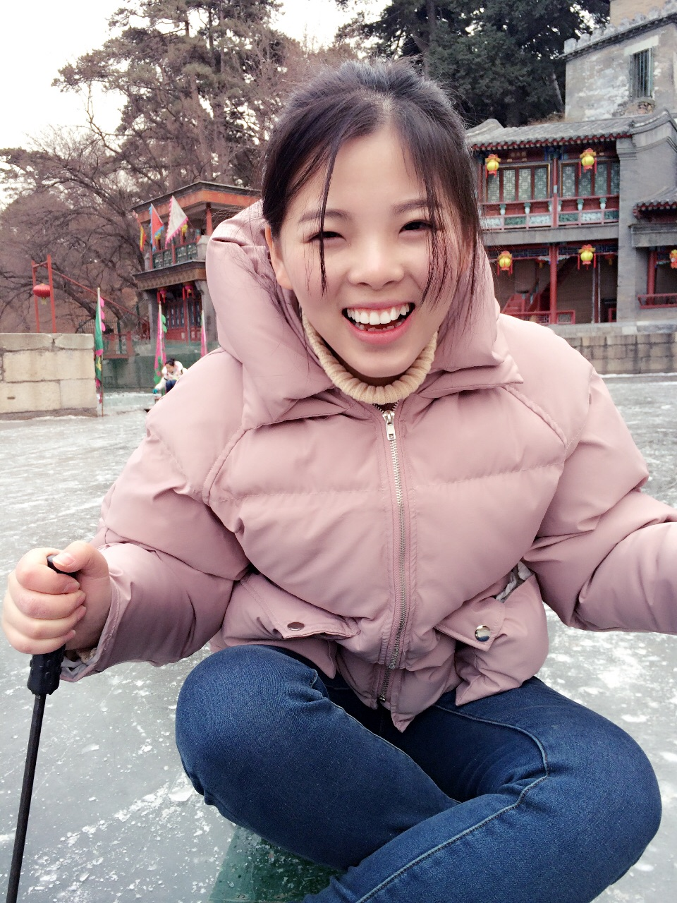
不好意思，这张没眼睛，等下哈

哎哟，这张好像也没眼睛…
所以笑起来最好要看不见眼睛才自然（微笑脸）
一本正经的胡说八道
举个 ，光嘴巴笑，眼睛不笑是什么样子
是不是很假？
那咱们看看眼睛和嘴巴同时笑
同样是抿嘴笑是不是感觉就不一样？
那咱们再来看看同样是露牙笑
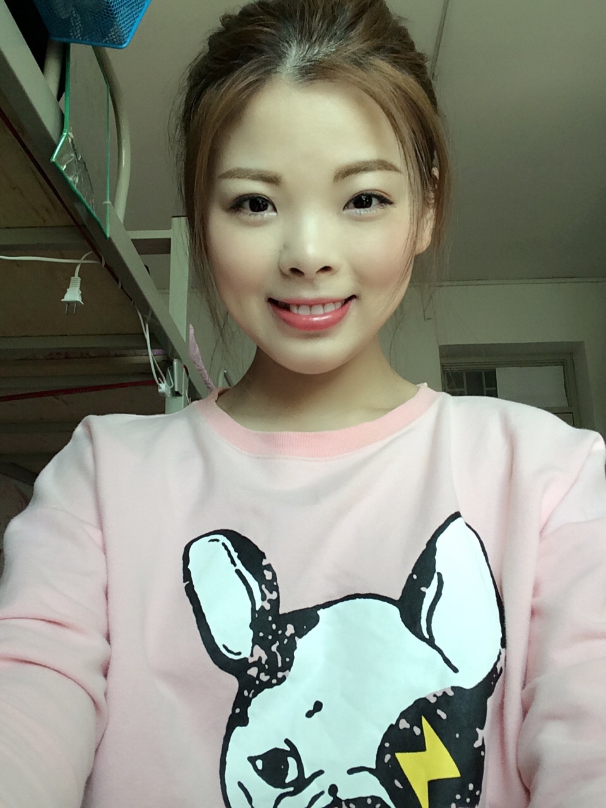
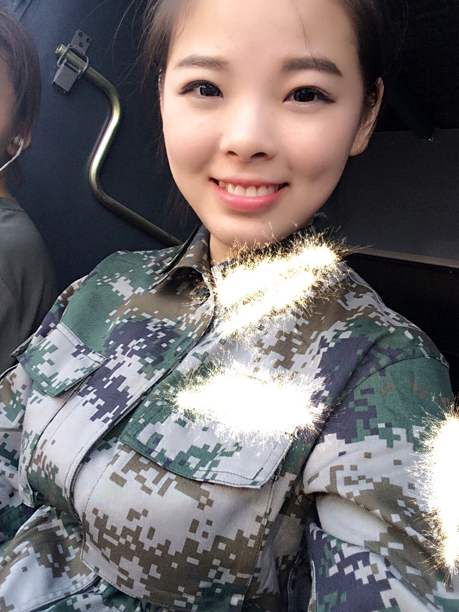
有什么不一样吗？感觉粗来了吗？
那咱们再看看抿嘴笑和露牙笑
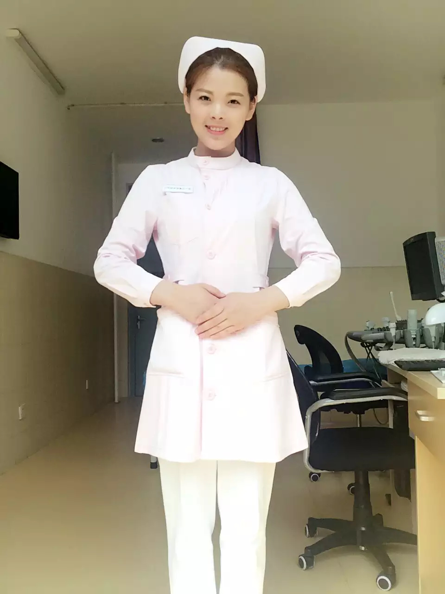
你们更喜欢这上面哪个护士姐姐帮你打针呢？
那我们说重点
发自内心的笑肯定是最好看的但是如果碰上你不想笑非要笑的场合呢？
那就让眼睛笑，我没有在胡说八道啊，眼睛是真的会笑的，所以说韩国姑娘为什么那么多人去打卧蚕，它的作用真的很大
这里不是让题主去打卧蚕啦…
那怎么样让眼睛笑？那就我又来示范啦
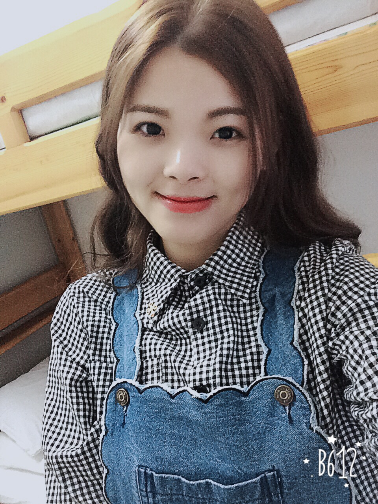
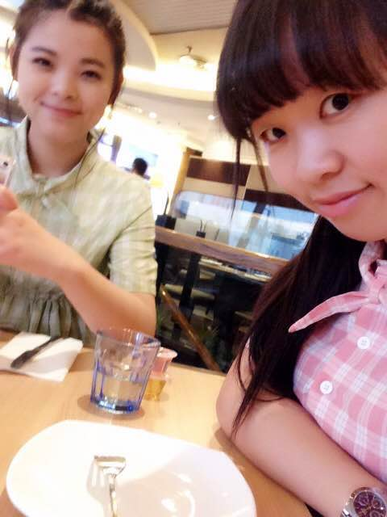
最后一张虽然糊掉了还是能明显感受到我的笑意吧？
重点就是把眼睛挤弯
这样不管你是抿嘴笑还是露牙笑都会让人感受到是你发自内心的笑
以下是放照时间
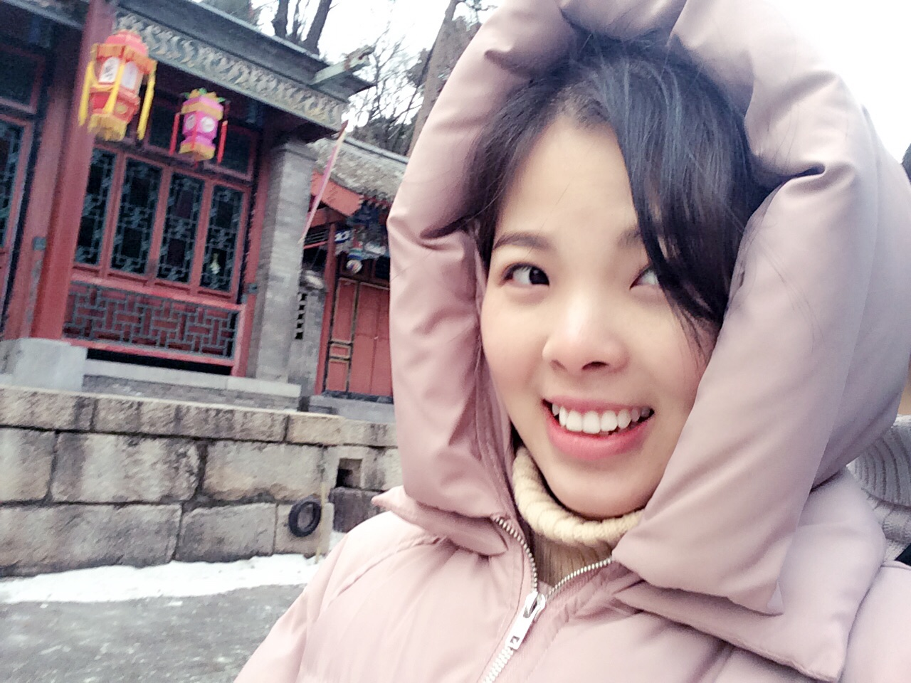
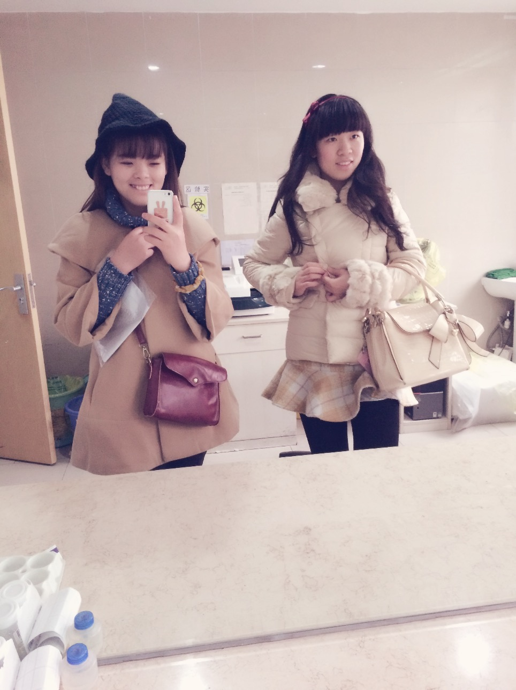
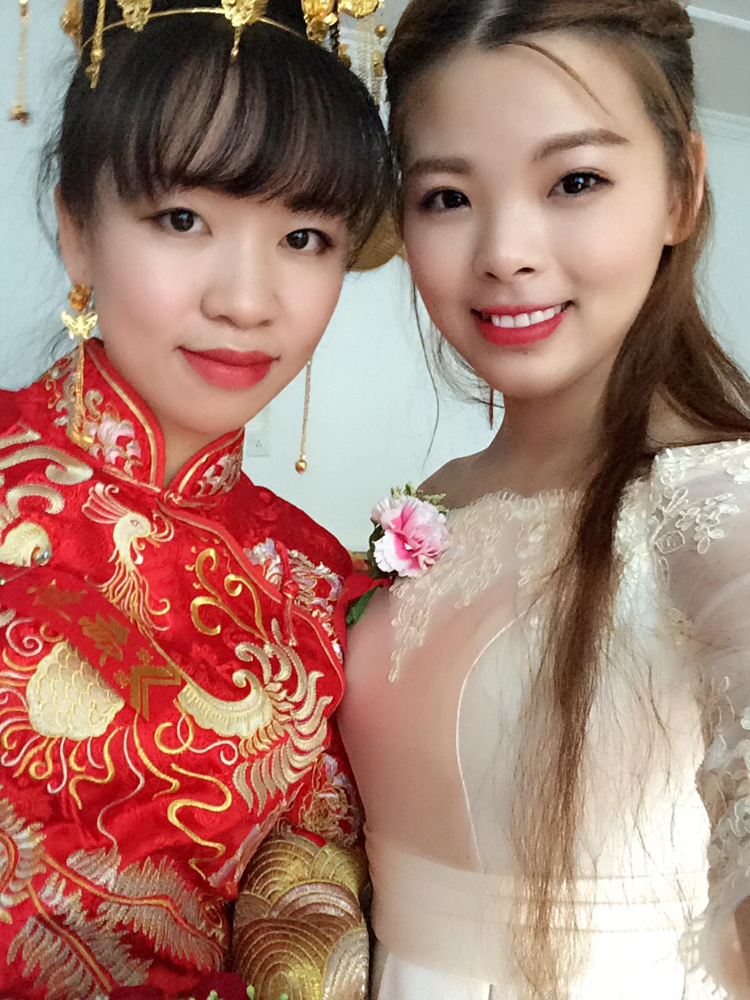
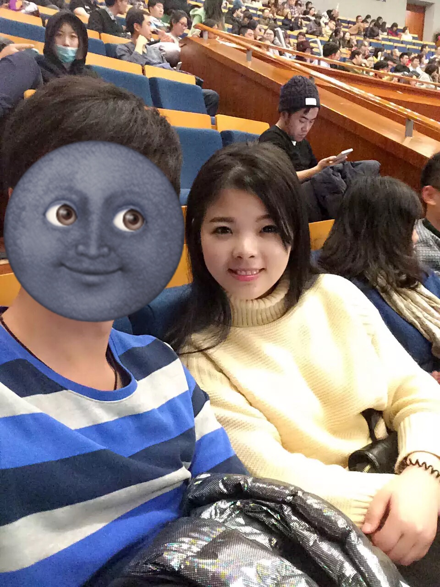
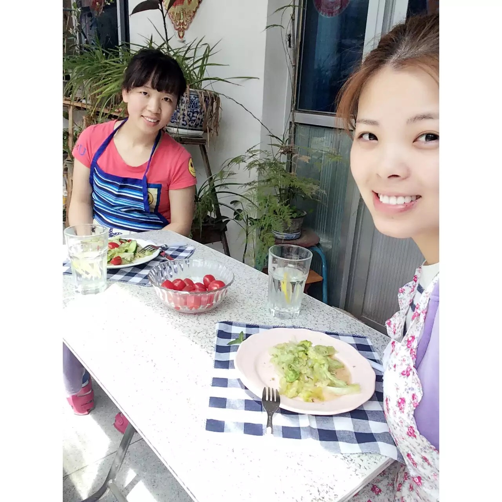
抓拍可能就拍残了…
被熊孩子戳一脸也能笑的这么开心…
我是真开心吗？不，我内心是拒绝的
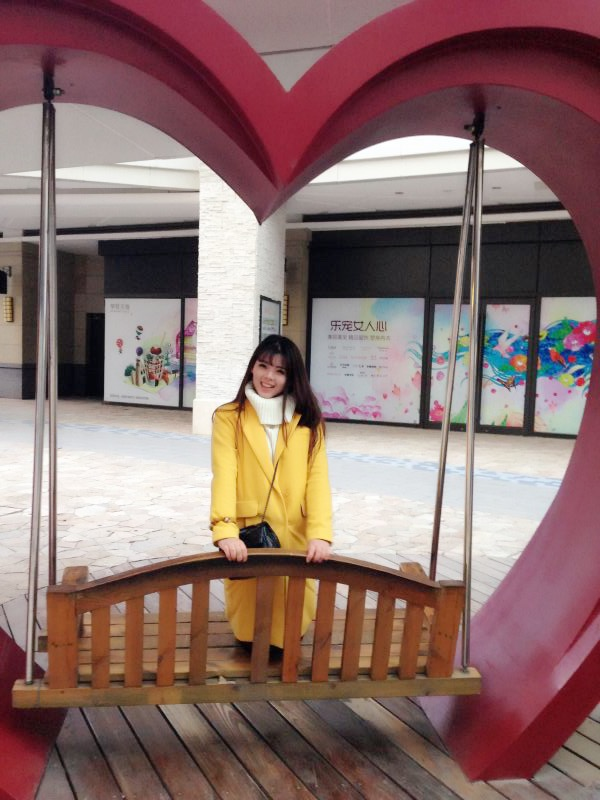
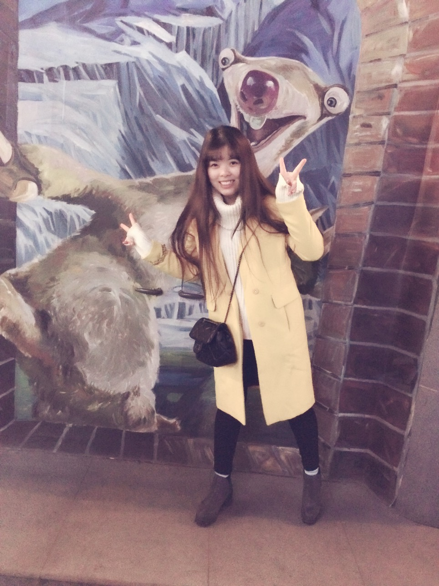
其实龇牙也是个好方法…
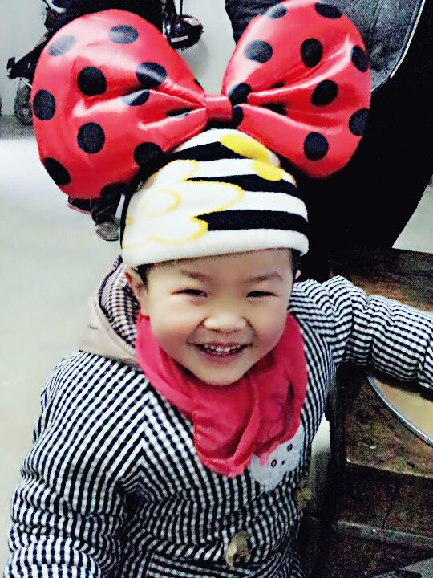
这孩子从小就爱笑，这么小都有法令纹了…啧啧…
最后放张大合照作为最后的ending
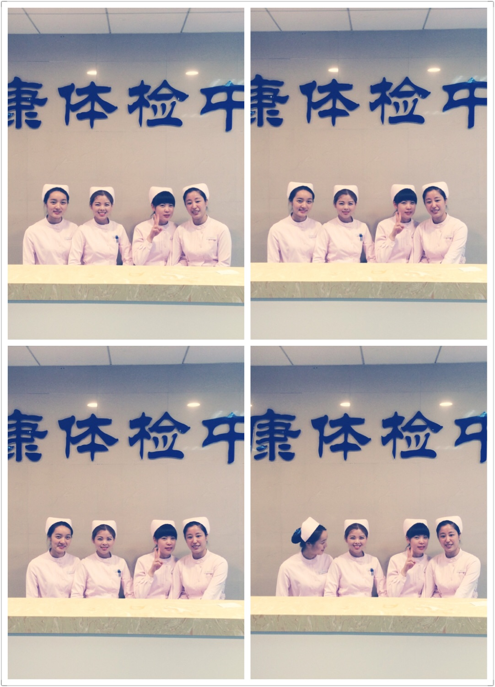
笑的最开心的就是我了…
以上
谢谢观赏
看完不点赞别跑，护士姐姐给你
打针…